Invited talk · University of Oxford · 19 September 2024
Manas Sharma at TURBOMOLE 2024
Manas Sharma is one of the lead developers of the TURBOMOLE electronic-structure program. His work includes DFT-based quantum embedding coupled with wavefunction theory and real-time TDDFT in the RIPER module.
At the TURBOMOLE Users Meet Developers conference, held 16–19 September 2024 at St Hilda’s College, University of Oxford, he gave an invited talk on Density Functional Theory Based Embedding for Periodic Systems on 19 September. These photographs document his presentation and the conference.
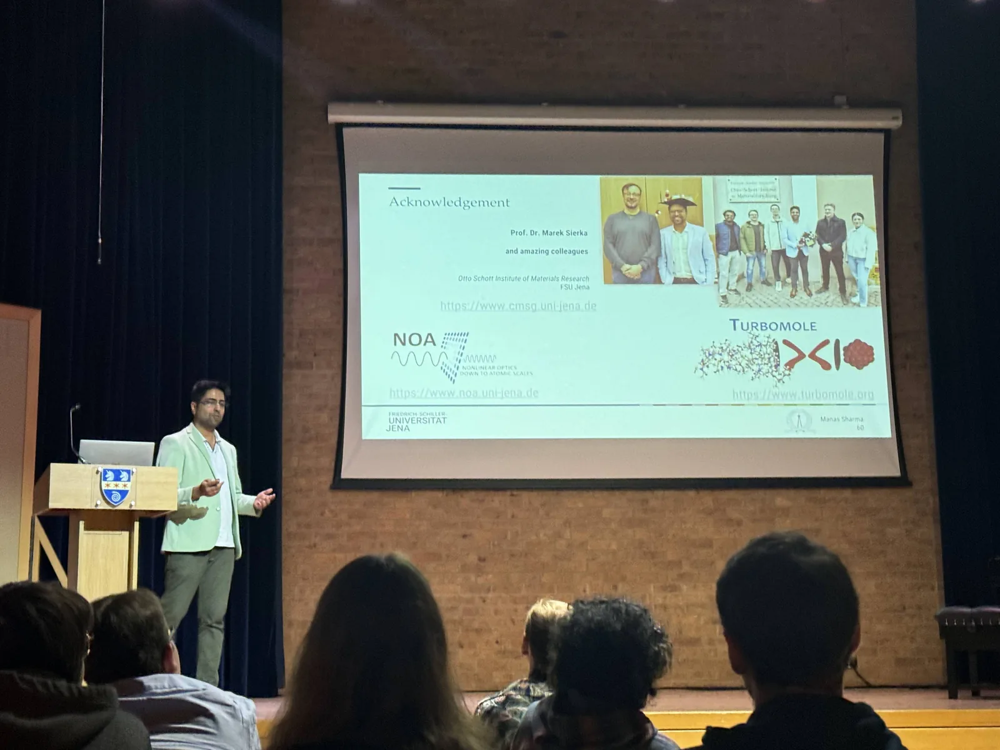
Photographs and research
TURBOMOLE developer conference photos
Select an image to open the viewer. Use the arrows or keyboard to browse.

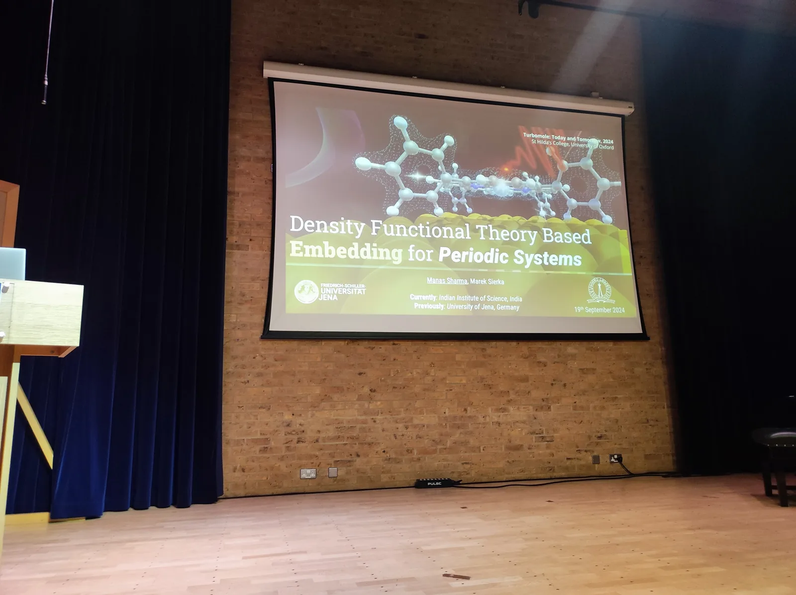

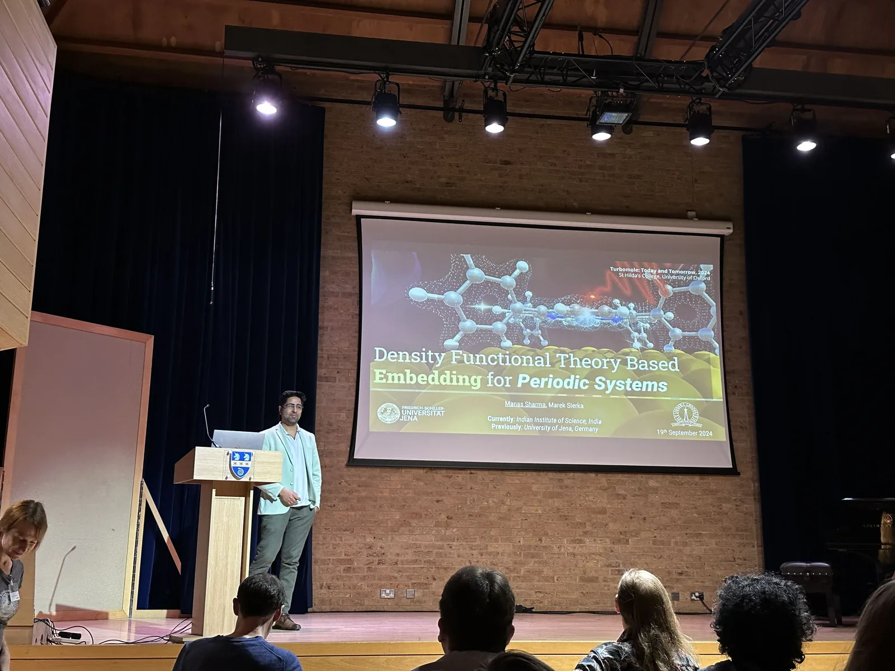

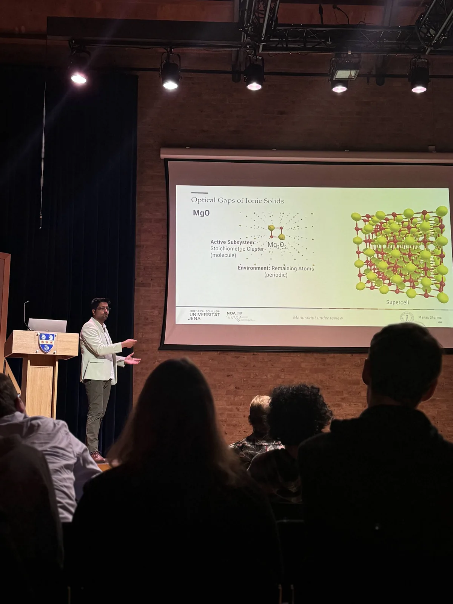

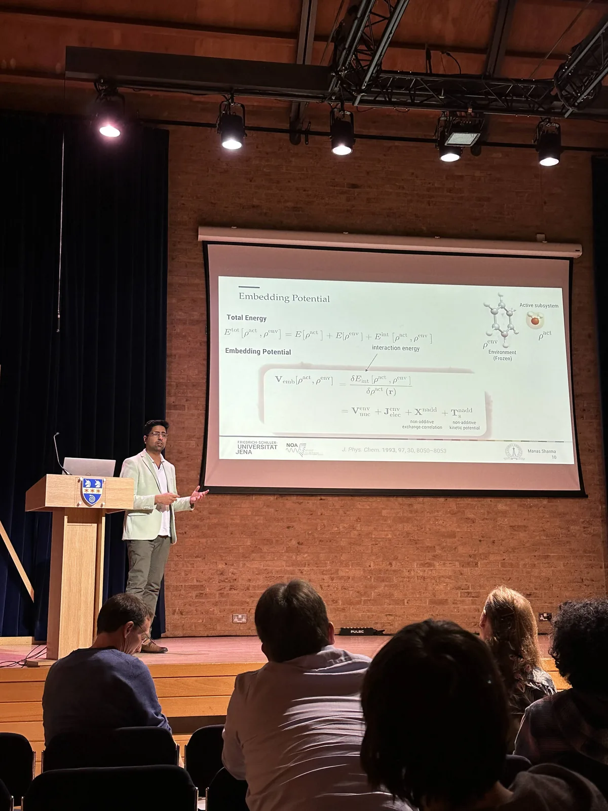

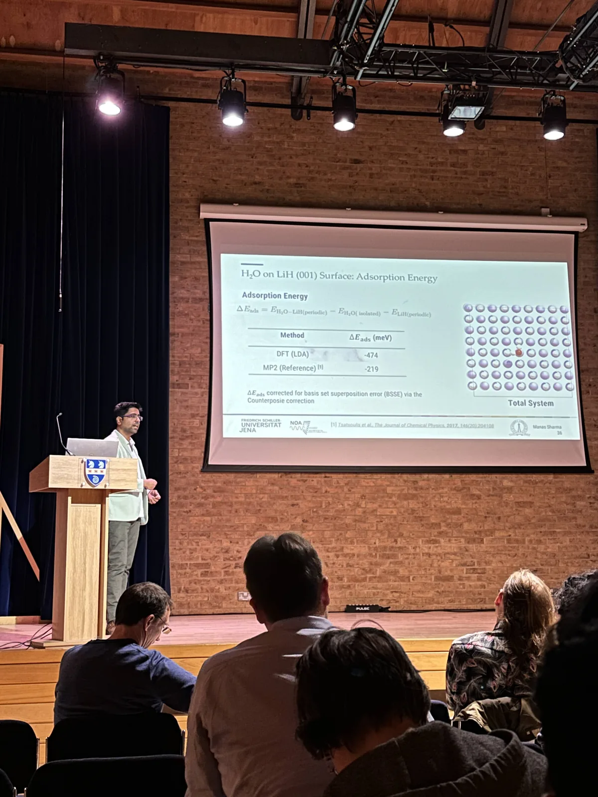

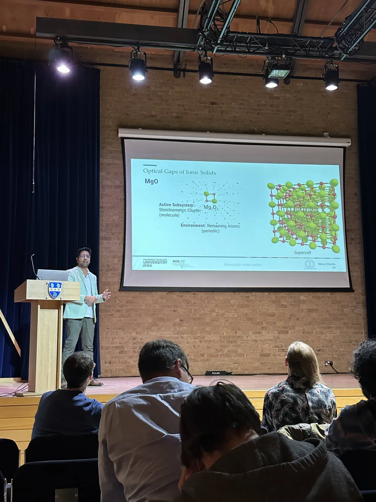

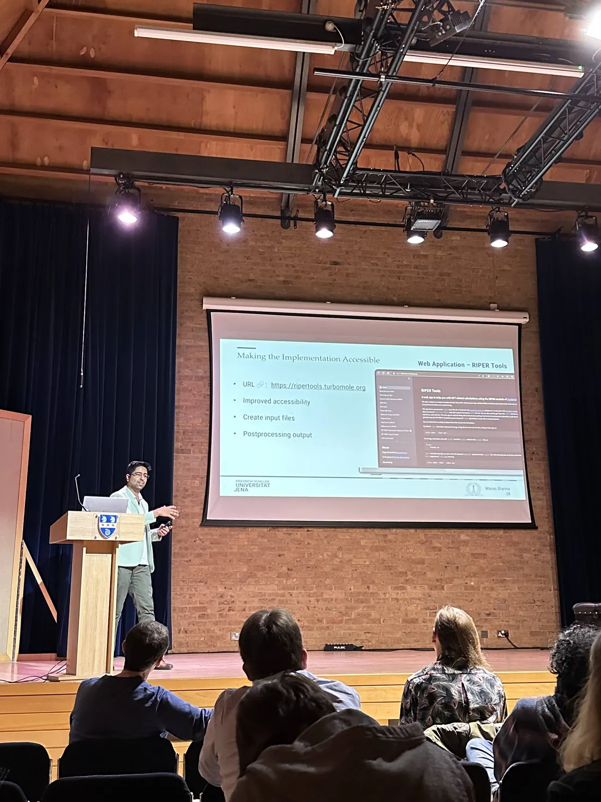

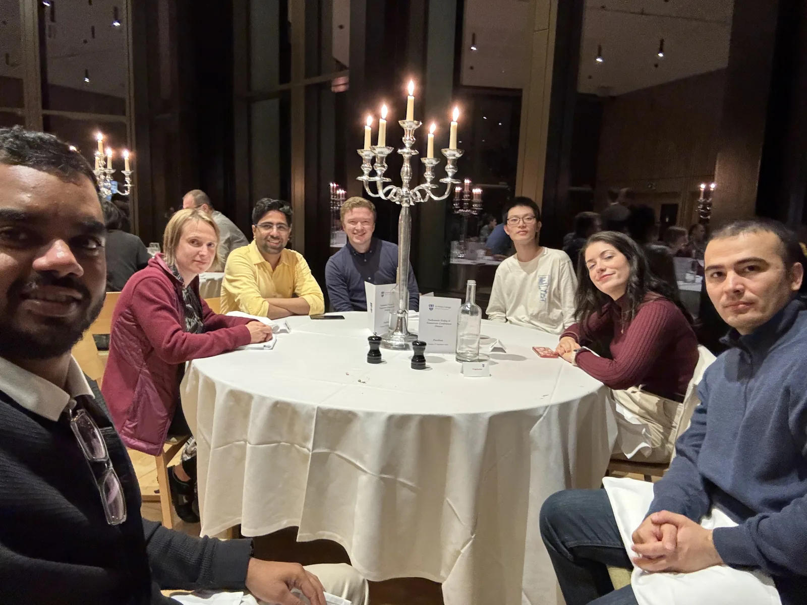

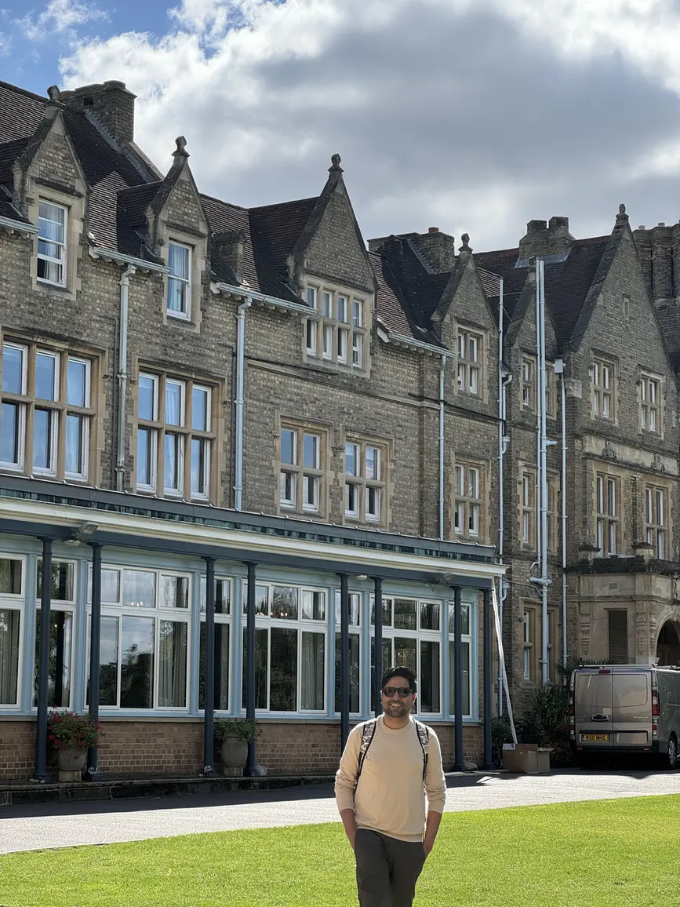

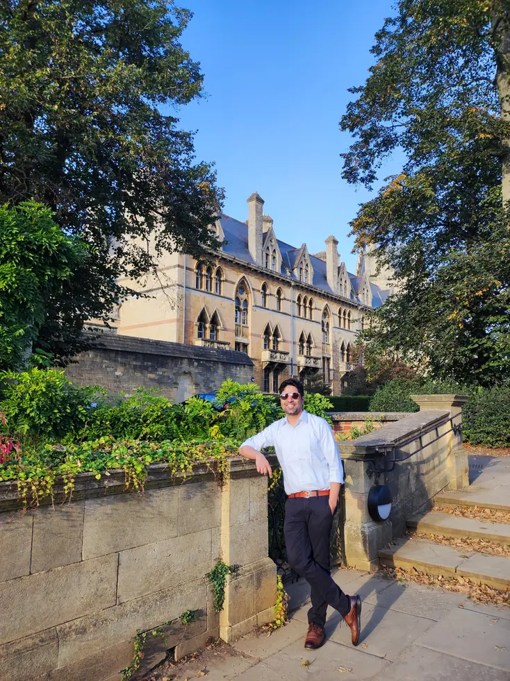

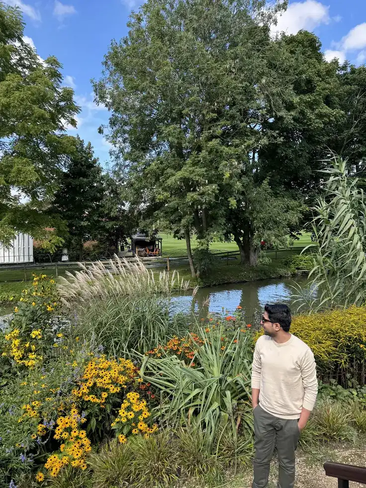